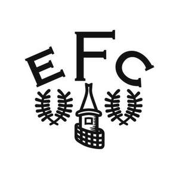

Trade Mark Journal No.2025/013 28 March 2025
UK00004148589 16 January 2025 (25,41)
Mark 1
Mark 2
Mark 3
Mark 4

- Class 25
- Clothing, footwear, headwear; articles of outer clothing; sportswear; leisurewear; sports kits; sports shirts; sports shorts; sports socks; replica football kits; replica football shirts; replica football shorts; replica football socks; training clothing; tracksuits; training pants; sweatshirts; sweatpants; jackets; coats; waterproof clothing; anoraks; shirts; tops; t-shirts; polo shirts; vests; singlets; knitwear; jerseys; pullovers; sweaters; hooded tops; cardigans; waistcoats; suits; trousers; pants; shorts; ties; underwear; briefs; nightwear; swimwear; socks; gloves; mittens; scarves; wristbands; headbands; ready-made clothes linings; shoes; boots; sandals; slippers; sports shoes; training shoes; football boots and shoes; studs for football boots; hats; caps; sun visors; belts; aprons (clothing); uniforms; articles of clothing, footwear and headwear for babies and children; bodysuits; romper suits; sleep suits; bibs; baby boots; face coverings (clothing); face masks (clothing).
- Class 41
- Entertainment; sporting and cultural activities; education; providing of training; sporting services; organisation of sporting events; provision of entertainment, training, recreational, sporting and cultural activities and facilities; instruction and educational services; education and training in relation to sports; football academy services; football coaching, football schools and schooling; arranging and conducting of education and training in relation to football; arranging, conducting and provision of football instructional courses; football entertainment services; entertainment in the nature of football games; physical education; fitness training services; physiotherapy training; sport and holiday camp services (in the nature of entertainment); rental of sporting equipment; practical training and demonstrations; arranging, organising and conducting of conferences, conventions, seminars, events and exhibitions; arranging, organising and conducting of games, contests and competitions; organising community sporting and cultural events; hospitality services (entertainment); provision of lotteries; gaming services; arranging, organising and conducting of award ceremonies; provision of museum facilities; provision and management of stadium facilities and services; rental of stadium facilities; presentation of live performances; provision of club sporting services; sports club services; health club services; provision of health club, fitness club and gymnasium facilities; provision of sports information services; provision of information relating to football; sporting information services, namely scouting of players; fan club services; fan club membership scheme services; box office services; booking and ticketing services for sports, entertainment, cultural and educational events; entertainment, training, recreational, and sporting information services provided via the Internet and other computer and communications networks; education and entertainment services provided by means of radio, television, telephony, the Internet and online databases; provision of cinematographic and video entertainment; entertainment and educational services featuring electronic media, multimedia content, audio and video content, movies, pictures, photographs, graphics, images, text and related information provided via the Internet and other computer and communications networks; streamable audio and video recordings; streamable music, sounds, images, graphics, videos, games, text or data; entertainment, education, sporting and cultural activities provided online and in online virtual worlds; arranging, organising and hosting of virtual entertainment, educational, sporting and cultural events and activities; organising online and virtual sporting events, activities, games and competitions; providing virtual environments in which users can interact for recreational, leisure or entertainment purposes; provision of online games featuring virtual goods or virtual currencies; providing online, non-downloadable virtual goods for use online and in online virtual worlds for entertainment purposes; entertainment services, namely, providing online, non-downloadable virtual goods; providing temporary use of non-downloadable game software featuring virtual goods; provision of online, non-downloadable non-fungible tokens (NFTs) for entertainment purposes; entertainment services featuring online, non-downloadable digital tokens and digital collectibles; entertainment services, namely, providing online, non-downloadable virtual merchandise; film production; production of video recordings, sound recordings, DVDs, CDs, CD-ROMs, video and audio tapes; production and distribution of television and radio programmes; production of sporting events for television and radio; publication of magazines, books, texts and printed matter; publishing by electronic means; providing online non-downloadable electronic publications; provision of television programmes, radio programmes, films, audio and/or visual material and games online (not downloadable); publication of news online; information relating to sport and entertainment provided online from a computer database or the Internet; information, advisory and consultancy services in relation to all of the aforesaid.
The Everton Football Club Company Limited
Representative: Wilson Gunn